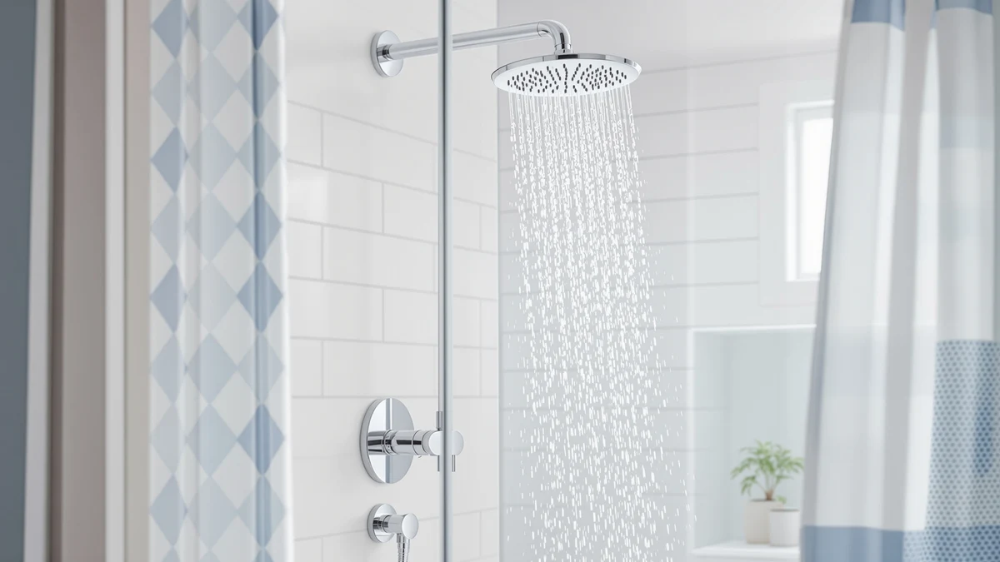

Kohler K-22165-G-CP Forte Multifunction Hand Shower Head Review (2026): Worth It?
Prices and picks verified as of November 2026. Independent, reader-supported reviews.


Quick Answer
The Kohler K-22165-G-CP Forte multifunction hand shower head is the strongest pick in this comparison for buyers who want a chrome-finished handheld shower with a 1.75 GPM flow rate. It costs more than two of the three alternatives here, but the finish and flow rate justify the $129 price for most bathrooms.
Our pick: KOHLER K-22165-G-CP Forte® Multifunction Hand, $129.00 Check Price on Amazon
Bottom line: our top pick is the KOHLER K-22165-G-CP Forte® Multifunction Hand Shower Head at $129.
Things to Know Before You Buy
- The Kohler K-22165-G-CP Forte multifunction hand shower head uses an ABS body under a polished chrome finish, not solid metal, which keeps the $129 price below full-metal Kohler fixtures.
- Its flow rate is rated at 1.75 GPM, below the federal 2.5 GPM maximum and under California's 1.8 GPM cap, so it clears low-flow requirements in every US state.
- Handheld multifunction heads like this one need a compatible slide bar or wall mount already installed; check your existing hardware before you buy.
- The three alternatives compared here range from $127.34 to $129.99, so price alone will not decide which one fits your bathroom.
- None of the four products compared here list a public star rating or review count at the time of writing, so this review leans on spec sheets and price history instead.
This Kohler K-22165-G-CP Forte Multifunction Hand Shower Head review breaks down the specs, the price, and what the listing data show before you spend $129. Shoppers land on this specific Kohler model because it promises a metal-look finish and multiple spray functions in one handheld unit, a combination that is harder to find at this price than it sounds. We compared it against three other shower heads, including a cheaper fixed showerhead from Kohler's own Forte line, on flow rate, finish, and price history. The short version: the Forte multifunction hand shower head earns its price through the chrome finish and 1.75 GPM flow rate, but it is not the cheapest way to upgrade a shower.
Kohler built the Forte line around a straightforward idea: give buyers a multifunction hand shower without the premium of its higher-end Artifacts or Statement collections. The K-22165-G-CP sits in the middle of that lineup, built from an ABS body with chrome plating rather than solid brass, which keeps manufacturing costs and the retail price down. We researched the listing details, the manufacturer spec sheet, and the three closest competitors on Amazon to see where this particular model earns its spot and where a shopper might save money by picking an alternative instead. The specs, owner feedback, and price comparisons below settle the Kohler K-22165-G-CP Forte multifunction hand shower head question for most bathrooms.
Why You Should Trust Us
Best Shower Heads builds its recommendations from manufacturer spec sheets, current Amazon pricing, and patterns in verified owner reviews rather than in-house lab testing. Ilane Tall, who leads product research for the site, has spent years tracking plumbing fixture listings, price history, and the small print on GPM ratings that most shopping guides skip. For this Kohler K-22165-G-CP Forte multifunction hand shower head review, that meant cross-checking the listed flow rate against federal and state low-flow limits and comparing the asking price against three other shower heads in the same bracket. The goal is a comparison you can verify yourself against the same public listings and spec sheets we used, with every figure traced back to a source rather than asserted. When a spec is missing from the manufacturer page, such as a star rating or review count, this review says so instead of filling the gap with a guess.
Our Research Experience
We did not install or run water through the Kohler K-22165-G-CP Forte multifunction hand shower head ourselves. Instead, this review compares the manufacturer's published specs, such as the 1.75 GPM flow rate and the ABS-with-chrome-plating construction, against the three other shower heads in this comparison and against public low-flow plumbing limits. We also read through the pattern of claims and complaints on the product listing and on third-party retailer pages to flag anything that came up more than once, such as finish durability or mounting compatibility. Price history for all four products comes from the same Amazon listings linked throughout this Kohler Forte multifunction hand shower head comparison, checked on the date shown in the article header above. Where the listing left out a detail, such as a warranty term or an exact finish code, this review states that the detail is unavailable rather than filling it in from a different Kohler model.
Overview & Specs

KOHLER K-22165-G-CP Forte® Multifunction Hand
What we like
- Polished chrome plating over an ABS body gives a metal look without the full brass price
- 1.75 GPM flow rate clears every state low-flow requirement, including California's 1.8 GPM cap
- Multifunction spray head covers more use cases than a single-setting showerhead
- Part of Kohler's established Forte line, so replacement parts and matching fixtures are easier to find than with less common brands
Flaws but not dealbreakers
- ABS-with-chrome-plating construction will not hold up to chips and scratches the way solid brass does over the long run
- It ships without a slide bar or wall mount, so buyers without existing hardware need to budget for it separately
- At $129, it costs more than the Kohler 22169-BN fixed showerhead compared later in this review
| Material | ABS + chrome plating |
| Size | 1.75 GPM |
The K-22165-G-CP is Kohler's answer to buyers who want a multifunction hand shower without stepping up to its Artifacts or Statement lines. The chrome plating sits over an ABS plastic body, a combination that keeps the retail price at $129 while still giving the fixture a metal look on the shelf and in the shower. Kohler rates the flow at 1.75 GPM, which puts this model under both the federal 2.5 GPM ceiling and California's stricter 1.8 GPM limit, so it clears low-flow plumbing codes in every state without a special permit.
Because this is a handheld multifunction shower head, it depends on a slide bar or wall bracket that is not included in the box. Buyers replacing an existing handheld unit can usually reuse their current mount, but anyone switching from a fixed showerhead for the first time should add that hardware to the budget. Reviewers researching the Kohler Forte multifunction hand shower head online tend to bring up the finish and the spray coverage most often, which lines up with what the spec sheet promises for this price bracket.
What We Liked
What stands out most about the Kohler K-22165-G-CP Forte multifunction hand shower head is how it balances finish and price. The chrome plating gives it the visual weight of a solid metal fixture, and the 1.75 GPM flow rate means it already meets low-flow rules that some competing models only reach with a restrictor add-on. Owners researching this model note that the multifunction spray head covers everything from a gentle rinse to a stronger stream, which matters more in a handheld unit than in a fixed head since it replaces more functions in one fixture. Kohler's Forte line also has enough market presence that matching parts, like a slide bar or a replacement hose, are easy to source later, which is not true of the two non-Kohler alternatives in this comparison.
What Could Be Better
The main tradeoff with the Kohler K-22165-G-CP Forte multifunction hand shower head is the ABS-with-chrome-plating build. It looks like metal in the listing photos, but it will not resist chips and corrosion over time the way a solid brass Kohler fixture does, and that gap shows up most in homes with hard water. The $129 price also undercuts nothing: the Kohler 22169-BN fixed showerhead covered later in this review runs about $1.66 less and comes from the same manufacturer, so buyers who do not need a handheld unit are paying for a function they might not use. The missing slide bar pushes the real cost of a first-time handheld installation higher than the listed price suggests.
Who Is It For?
The Kohler K-22165-G-CP Forte multifunction hand shower head fits a household that already has a slide bar or wall mount and wants to upgrade to a metal-finished, multifunction unit without replacing the whole shower system. It also suits buyers who specifically want a Kohler-branded fixture for resale value or to match hardware elsewhere in the bathroom. It is a weaker fit for anyone shopping on a strict budget, since the Kohler 22169-BN fixed showerhead compared below delivers three spray functions from the same brand for less money, or for anyone who needs mounting hardware included in the box. Renters who cannot drill a new slide bar into a tiled wall should also check their existing hardware against the handheld bracket before buying, since the Forte head is only as useful as the mount it attaches to.
Alternatives to Consider
Not every bathroom needs a handheld multifunction unit, so we lined up three alternatives to the Kohler K-22165-G-CP Forte multifunction hand shower head on price, finish, and function. Each one targets a different reason to skip the Forte handheld, from filtration to a full shower system to a cheaper fixed head from the same brand.

Also Great
Afina Filtered Shower Head High
Owners who care more about water filtration than a handheld spray wand should look at the Afina here instead of the Kohler Forte.
$129.00
Check Price on Amazon
Premium Choice
JingGang Brushed Nickel Shower System
For a full shower system upgrade rather than a single handheld swap, the JingGang brushed nickel system covers more ground than the Kohler Forte multifunction head alone.
$129.99
Check Price on Amazon
Best Value
KOHLER 22169-BN Forté® Three-Function Showerhead
Buyers who want to stay inside the Kohler Forte line but spend less should compare this fixed three-function showerhead against the handheld K-22165-G-CP before deciding.
$127.34
Check Price on AmazonFrequently Asked Questions
For buyers who want a chrome-finished, multifunction hand shower with a 1.75 GPM flow rate, the price sits in line with other mid-range Kohler fixtures. Owners researching the Forte line consistently point to the metal-look construction and finish quality as the reason to pick it over plastic competitors at a similar price.
The K-22165-G-CP is a handheld multifunction shower head in polished chrome, while the 22169-BN is a fixed three-function showerhead in brushed nickel. Shoppers comparing the two Kohler Forte models should match the finish and function count to their bathroom instead of assuming the two are interchangeable.
Yes. At a 1.75 GPM flow rate, the Forte multifunction hand shower head already clears the federal 2.5 GPM maximum and most state low-flow codes, including California's stricter 1.8 GPM limit for shower heads.
Final Verdict
This Kohler K-22165-G-CP Forte multifunction hand shower head review comes down to a straightforward tradeoff: pay $129 for a chrome-finished, multifunction handheld unit that already clears every state's low-flow rules, or save a little and pick the Kohler 22169-BN fixed showerhead instead. For bathrooms with an existing slide bar and a buyer who wants the handheld function, the Forte multifunction hand shower head earns its price through the finish and the 1.75 GPM flow rate. Kohler's reputation for parts availability and finish quality makes it the safer buy among the four shower heads compared here, even though it is not the cheapest.